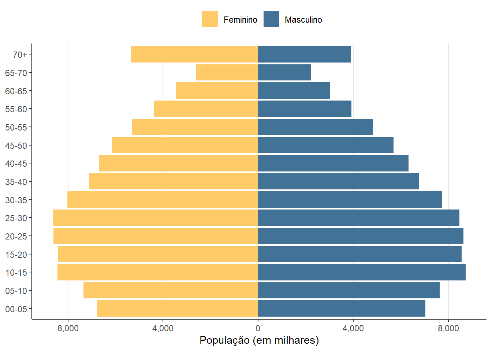
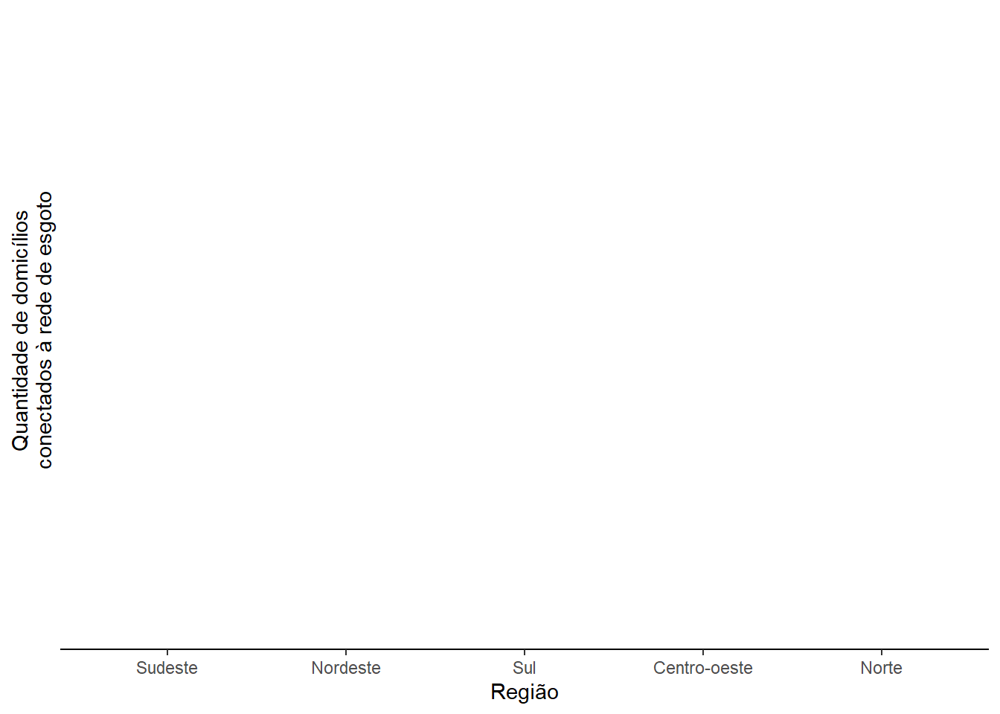

read_households(
year, # ano de referência do censo
columns, # seleciona colunas que devem ser lidas
add_labels, # adiciona os 'labels' das variáveis categóricas
as_data_frame, # retorna resultado como um `Arrow DataSet` ou `data.frame`
showProgress, # mostra barra de progresso do download
cache # salva arquivo em cache para rapida leitura posteriormente
)4.1 Dados disponíveis no {censobr}
O {censobr} é um pacote de R para acessar os dados e documentação dos censos demográficos do Brasil (Pereira e Barbosa 2023). O pacote disponibiliza microdados da amostra de todas as edições do censo demográfico desde 1960. A Tabela 1 apresenta abaixo todas as bases de dados do censo que você consegue acessar com o {censobr}.
Tabela 1. Funções de dados disponíveis no {censobr}
| Função | Origem | Unidade | Definição | Disponibilidade | ||||||
|---|---|---|---|---|---|---|---|---|---|---|
| 1960 | 70 | 80 | 91 | 2000 | 10 | 22 | ||||
| read_population() | Amostra | Microdado | Lê os microdados de pessoas | X | X | X | X | X | X | em breve |
| read_households() | Amostra | Microdado | Lê os microdados de domicílios | X | X | X | X | X | X | em breve |
| read_families() | Amostra | Microdado | Lê os microdados de famílias do censo de 2000 | X | ||||||
| read_emigration() | Amostra | Microdado | Lê os microdados de emigração | X | em breve | |||||
| read_mortality() | Amostra | Microdado | Lê os microdados de mortalidade | X | em breve | |||||
| read_tracts() | Universo | Setor Censitário | Lê os dados do Universo agregados por setores censitários | em breve | X | em breve | ||||
Todas as funções de leitura de microdados possuem a mesma estrutra (sintaxe), o que permite o usuário baixar os dados de maneira fácil e intuitiva com um único comando. As funções possuem os seguintes parâmetros:
Cache local dos dados
A primeira vez que o usuário executa uma função, o {censobr} fará o download dos dados e os armazenará localmente numa pasta do pacote. Dessa forma, os dados precisam ser baixados apenas uma vez. Mais informações na seção Cache de Dados abaixo.
4.2 Trabalhando com dados maior do que a RAM
É muito comum que os microdados do censo brasileiro sejam grandes demais para serem carregados na memória RAM do usuário. Para resolver esse problema, o {censobr} foi construído sobre a plataforma Arrow e arquivos em formato .parquet, o que permite que o usuário trabalhe de maneira eficiente até mesmo com bases de dados muito grandes utilizando funções já bem conhecidas do pacote {dplyr}.
Vamos então partir para exemplos na prática, e começar carregando as bibliotecas que usamos.
# carrega bibliotecas
library(censobr)
library(arrow)
library(dplyr)
library(ggplot2)4.3 Dados de população
Neste exemplo, nós vamos criar um gráfico da pirâmica populacional do Brasil no ano de 2010. O primeiro passo é usar a função read_population() para carregar os microdados de população.
O comportamento padrão das funções do {censobr} é retornar todas as variáveis das bases de dados. No entanto, como vamos fazer uma análise simples, o mais eficiente é passarmos um vetor com os nomes das colunas que vamos utilizar. Neste caso, usaremos somente as variáveis de peso amostral, sexo e idade (códigos "V0010", "V0601" e "V6036", respectivamente). No último capítulo do curso a gente vai ver como baixar os dicionários variáveis dos censos.
pop <- read_population(
year = 2010,
columns = c('V0010', 'V0601', 'V6036'),
add_labels = 'pt',
showProgress = FALSE
)
class(pop)- 1
- Aumentando eficiência ao ler apenas as colunas que vamos usar
- 2
- Adicionando os ‘labels’ em Português das variáveis categóricas.
[1] "arrow_dplyr_query"Ao rodar o comando nrow(pop), você verá que a tabela de microdados de população do Censo de 2010 tinha mais de vinte milhões de observações (20.635.472), mas essas observações não estão carregadas na sua memória RAM. Isso porque, por padrão, a saída da função é um "arrow_dplyr_query" ou "ArrowObject". Isso permite que você trabalhe com os dados do censo de maneira super rápida e eficiente, mesmo que a tabela de dados seja grande demais para a memória do seu computador. Note que se você passar o parâmetro as_data_frame = TRUE, a função carregará os dados como um data.frame na memória RAM. Atenção: isso pode fazer com que a sessão do R trave em ambientes com pouca memória.
Esse output em arrow pode ser analisado de maneira similar a como se analisaria um data.frame utilizando-se funções do pacote {dplyr}. Uma diferença, no entanto, é que as operações somente são executadas e resultados extraídos quando o usuário roda a função dplyr::collect().
Neste exemplo, abaixo, nós visualizamos as primeiras linhas 6 da tabela de dados com head(pop), e somente essas poucas observações são carregas para memória com o commando collect():
head(pop) |>
collect() V0010 V0601 V6036
1 8.705865 Masculino 22
2 8.705865 Feminino 17
3 9.818689 Masculino 38
4 9.495608 Feminino 44
5 9.495608 Masculino 11
6 9.495608 Masculino 16O próximo passo para criamos nossa pirâmide populacional é criar um variável categória com grupos de idade. No exemplo abaix, nós utilizadmos grupos de 5 anos.
pop <- pop |>
mutate(
age_group = dplyr::case_when(
V6036 <= 04 ~ "00-05",
V6036 >= 05 & V6036 < 10 ~ "05-10",
V6036 >= 10 & V6036 < 15 ~ "10-15",
V6036 >= 15 & V6036 < 20 ~ "15-20",
V6036 >= 20 & V6036 < 25 ~ "20-25",
V6036 >= 25 & V6036 < 30 ~ "25-30",
V6036 >= 30 & V6036 < 35 ~ "30-35",
V6036 >= 35 & V6036 < 40 ~ "35-40",
V6036 >= 40 & V6036 < 45 ~ "40-45",
V6036 >= 45 & V6036 < 50 ~ "45-50",
V6036 >= 50 & V6036 < 55 ~ "50-55",
V6036 >= 55 & V6036 < 60 ~ "55-60",
V6036 >= 60 & V6036 < 65 ~ "60-65",
V6036 >= 65 & V6036 < 70 ~ "65-70",
V6036 >= 70 ~ "70+"
))
head(pop) |>
collect() V0010 V0601 V6036 age_group
1 8.705865 Masculino 22 20-25
2 8.705865 Feminino 17 15-20
3 9.818689 Masculino 38 35-40
4 9.495608 Feminino 44 40-45
5 9.495608 Masculino 11 10-15
6 9.495608 Masculino 16 15-20E em seguida, nós só precisamos somar o número de homens e mulheres em cada grupo de idade. Para isso, nós somamos os valores da variável de peso amostral V0010 em cada grupo. Repare que ao chamarmos a função collect(), o código é executado e retorna um data.frame com a contagem de pessoas por sexo e faixa de idade. Repare que nós processamos todos os mais de 20 milhões de registro do censo, mas só precisamos carregar na memória essa tabela com 30 observações.
# cacula tabela de contagem de pessoas por idade
piramide_df <- pop |>
group_by(V0601, age_group) |>
summarise(pop_count = sum(V0010)) |>
collect()
head(piramide_df)# A tibble: 6 × 3
# Groups: V0601 [2]
V0601 age_group pop_count
<chr> <chr> <dbl>
1 Masculino 20-25 8627665.
2 Feminino 15-20 8429180.
3 Masculino 35-40 6767177.
4 Feminino 40-45 6688525.
5 Masculino 10-15 8727095.
6 Masculino 15-20 8557608.Pronto, no último passo é só fazer o gráfico de pirâmide populacional utilizando o pacote {ggplot2}.
Código
# remove grupo com idade missing `NA`
piramide_df <- filter(piramide_df, !is.na(age_group))
# transforma a contagem de mulheres para valores negativos
piramide_df <- piramide_df |>
mutate(pop_count = if_else(V0601 == "Masculino", pop_count, -pop_count))
# figura
ggplot(data = piramide_df,
aes(x = pop_count / 1000,
y = age_group,
fill = V0601)) +
geom_col() +
scale_fill_discrete(name="", type=c("#ffcb69","#437297")) +
scale_x_continuous(labels = function(x){scales::comma(abs(x))},
breaks = c(-8000, -4000,0,4000, 8000),
name = "População (em milhares)") +
theme_classic() +
theme(
legend.position = "top",
axis.title.y=element_blank(),
panel.grid.major.x = element_line(color = "grey90")
)
4.4 Dados de domicílios
4.4.1 Saneamento:
Neste exemplo, nós vamos usar os dados de domicílios do censo de 2010 para calcular qual a proporção de domicílios que estavam conectados à rede de esgoto nos municípios de cada região do Brasil. O primeiro passo é baixar os dados utilizando a função read_households().
dom <- read_households(year = 2010,
showProgress = FALSE)Agora vamos (1) agrupar as observações por região e município, (2) obter o número de domicílios conectados à rede de esgoto, (3) obter o número total de domicílios, (4) calcular a proporção de domicílios conectados e (5) coletar os resultados.
esg <- dom |>
compute() |>
group_by(name_region, code_muni) |>
summarize(rede = sum(V0010[which(V0207=='1')]),
total = sum(V0010)) |>
mutate(cobertura = rede / total) |>
collect()
head(esg)- 1
- Agrupar as observações por região e município
- 2
- Obter o número de domicílios conectados à rede de esgoto
- 3
- Obter o número total de domicílios
- 4
- Calcular a proporção de domicílios conectados
- 5
- Coletar os resultados.
# A tibble: 6 × 5
# Groups: name_region [1]
name_region code_muni rede total cobertura
<chr> <int> <dbl> <dbl> <dbl>
1 Centro-oeste 5000203 73.4 4534. 0.0162
2 Centro-oeste 5000252 10.3 1596. 0.00646
3 Centro-oeste 5000609 2150. 11012. 0.195
4 Centro-oeste 5000708 1705. 7419. 0.230
5 Centro-oeste 5000807 35.9 2759. 0.0130
6 Centro-oeste 5000856 12.4 3053. 0.00407Uma rápida análise da dispersão dos valores com o box-plot abaixo já revela um dos retratos da desigualdade regional brasileira. Em todos municípios da região Norte e quase metade dos municípios da região Nordeste, a gente encontra que menos de 50% dos domicílios estavam conectados à rede de esgoto em 2010. No próximo bloco, nós vamos visualizar como essas diferenças se distribuem espacialmente.
ggplot(esg) +
geom_boxplot(aes(x=reorder(name_region, -cobertura), y=cobertura,
weight = rede, color=name_region),
show.legend = F, outlier.alpha = 0.1) +
scale_y_continuous(labels = scales::percent) +
labs(x="Região", y="Quantidade de domicílios\nconectados à rede de esgoto") +
theme_classic()
4.5 Análise espacial com {geobr}
O {geobr} é um pacote para baixar dados espaciais oficiais do Brasil (Pereira e Gonçalves 2019). Ele inclui uma ampla variedade de dados geoespaciais disponíveis em várias escalas geográficas e para diversos anos, como municípios, regiões metropolitanas, biomas, estabelecimentos de saúde, etc (veja a lista completa no site do pacote).
4.6 Integração entre {censobr} e {geobr}


Todos os dados do {censobr} são enriquecidos com colunas de geografia, seguindo os padrões de nomenclatura do pacote {geobr} para facilitar a manipulação e a integração de dados espaciais dos censos demográficos do Brasil. As colunas adicionadas são: c('code_muni', 'code_state', 'abbrev_state', 'name_state', 'code_region', 'name_region', 'code_weighting', 'code_tract').
Para criarmos uma mapa com a distribuição espacial da cobertura da rede de esgoto no Brasil, nós vamos primeiro usar o pacote {geobr} para baixar as geometrias dos municípios brasileiros no ano de 2010. Vamos também sobrepor os limites das grandes regiões do país para dar um pouco mais de contexto à figura.
library(geobr)
regioes_df <- read_region(year = 2010,
showProgress = FALSE)
muni_sf <- read_municipality(year = 2010,
showProgress = FALSE)
head(muni_sf)Simple feature collection with 6 features and 4 fields
Geometry type: MULTIPOLYGON
Dimension: XY
Bounding box: xmin: -63.61822 ymin: -13.6937 xmax: -60.33317 ymax: -9.66916
Geodetic CRS: SIRGAS 2000
code_muni name_muni code_state abbrev_state
1 1100015 Alta Floresta D'oeste 11 RO
2 1100023 Ariquemes 11 RO
3 1100031 Cabixi 11 RO
4 1100049 Cacoal 11 RO
5 1100056 Cerejeiras 11 RO
6 1100064 Colorado Do Oeste 11 RO
geom
1 MULTIPOLYGON (((-62.2462 -1...
2 MULTIPOLYGON (((-63.13712 -...
3 MULTIPOLYGON (((-60.52408 -...
4 MULTIPOLYGON (((-61.42679 -...
5 MULTIPOLYGON (((-61.41347 -...
6 MULTIPOLYGON (((-60.66352 -...Agora nós só precisamos unir os dados espaciais com nossas estimativas utilizando a variável chave code_muni e mapear os resultados.
# merge data
esg_sf <- dplyr::left_join(muni_sf, esg, by = 'code_muni')
# plot map
ggplot() +
geom_sf(data = esg_sf, aes(fill = cobertura), color=NA) +
geom_sf(data = regioes_df, color = 'gray20', fill=NA) +
labs(title = "Quantidade de domicílios conectados à rede de esgoto") +
scale_fill_distiller(palette = "Greens", direction = 1,
name='Proporção de\ndomicílios',
labels = scales::percent) +
theme_void() +
theme(legend.position = 'bottom')
4.6.1 Distribuição espacial do valor do aluguel:
No exemplo anterior, nós agregamos os microdados do censo no nível de municípios. Neste próximo exemplo, faremos uma análise espacial no nível de áreas de ponderação. Aqui nós vamos visualizar como o valor do aluguel varia espacialmente na região metropolitana de São Paulo.
Primeiro, vamos baixar os municípios da região metropolitana de São Paulo com o {geobr}.
metro_sp <- geobr::read_metro_area(year = 2010,
showProgress = FALSE) |>
filter(name_metro == "RM São Paulo")Também precisamos dos polígonos das áreas de ponderação. Com o código abaixo, baixamos todas as áreas de ponderação do estado de São Paulo e, em seguida, mantemos apenas aquelas na região metropolitana de São Paulo.
wt_areas <- geobr::read_weighting_area(code_weighting = "SP",
year = 2010,
simplified = FALSE,
showProgress = FALSE)
wt_areas <- filter(wt_areas, code_muni %in% metro_sp$code_muni)
head(wt_areas)- 1
-
O comportamento padrão do {geobr} é baixar uma versão da malha espacial com geometrias ligeiramente simplificadas (
simplified = TRUE) para agilizar o processamento e visualização de dados. Aqui, nós baixamos os dados com geometrias originais devido à escala espacial da visualização dos resultados.
Simple feature collection with 6 features and 7 fields
Geometry type: MULTIPOLYGON
Dimension: XY
Bounding box: xmin: -46.73454 ymin: -23.64487 xmax: -46.64756 ymax: -23.53528
Geodetic CRS: SIRGAS 2000
code_weighting code_muni name_muni code_state abbrev_state code_region
1 3550308005100 3550308 São Paulo 35 SP 3
2 3550308005102 3550308 São Paulo 35 SP 3
3 3550308005101 3550308 São Paulo 35 SP 3
4 3550308005104 3550308 São Paulo 35 SP 3
5 3550308005103 3550308 São Paulo 35 SP 3
6 3550308005106 3550308 São Paulo 35 SP 3
name_region geom
1 Sudeste MULTIPOLYGON (((-46.67201 -...
2 Sudeste MULTIPOLYGON (((-46.67663 -...
3 Sudeste MULTIPOLYGON (((-46.67257 -...
4 Sudeste MULTIPOLYGON (((-46.70138 -...
5 Sudeste MULTIPOLYGON (((-46.69581 -...
6 Sudeste MULTIPOLYGON (((-46.73454 -...Agora voltamos para a base de dados de domicílios do censo de 2010. Com essa base, nós precisamos calcular o valor médio do aluguel gasto em cada área de ponderação. Note que para isso nós usamos a média do aluguel (variável V2011) ponderada pelo peso do domicílio (variável V0010). Para encontrar esses valores, o código abaixo (1) filtra apenas as observações nos nossos municípios de interesse, (2) computa temporariamente o resultado, (3) agrupa as observações por área de ponderação, (4) calcula o valor médio do aluguel e (5) coleta os resultados.
rent <- dom |>
filter(code_muni %in% metro_sp$code_muni) |>
compute() |>
group_by(code_weighting) |>
summarize(avgrent=weighted.mean(x=V2011, w=V0010, na.rm=TRUE)) |>
collect()
head(rent)- 1
- Filtra apenas as observações nos nossos municípios de interesse
- 2
- Computa temporariamente o resultado
- 3
- Agrupa as observações por área de ponderação
- 4
- Calcula o valor médio do aluguel
- 5
- Coleta os resultados.
# A tibble: 6 × 2
code_weighting avgrent
<chr> <dbl>
1 3503901003001 355.
2 3503901003002 627.
3 3503901003003 358.
4 3505708005001 577.
5 3505708005002 397.
6 3505708005003 327.Por fim, basta unirmos os dados espaciais com nossas estimativas de aluguel pela variável chave de código da área de ponderação (code_weighting), e mapear os resultados.
rent_sf <- left_join(wt_areas, rent, by = 'code_weighting')
ggplot() +
geom_sf(data = rent_sf, aes(fill = avgrent), color=NA) +
geom_sf(data = metro_sp, color='gray', fill=NA) +
labs(title = "Valor médio do aluguel por área de ponderação",
subtitle = "Região Metropolitana de São Paulo, 2010") +
scale_fill_distiller(palette = "Purples", direction = 1,
name='Valores\nem R$',
labels = scales::number_format(big.mark = ".")) +
theme_void()
4.7 Data cache
Na primeira vez que o usuário executa uma função, o {censobr} fará o download do arquivo e o armazenará localmente. Dessa forma, os dados só precisam ser baixados uma vez. Quando o parâmetro cache está configurado como TRUE (que é o comportamento padrão do pacote), a função lerá os dados que já estão armanezados em cache, o que é praticamente instantâneo.
Os usuários podem gerenciar os conjuntos de dados em cache usando a função censobr_cache(). Por exemplo, os usuários podem:
Listar arquivos em cache:
censobr_cache(list_files = TRUE)Deletar um arquivo específico:
censobr_cache(delete_file = "2010_emigration")Deletar todos arquivos do cache:
censobr_cache(delete_file = "all")Por padrão, os arquivos do {censobr} são salvos no diretório ‘User’. No entanto, os usuários podem executar a função set_censobr_cache_dir() para definir um diretório de cache personalizado. Note que essa definição personalizada precisa ser definida a cada nova sessão do R.
tempf <- tempdir()
set_censobr_cache_dir(path = tempf)
Pereira, Rafael H. M., e Rogério J. Barbosa. 2023. censobr: Download Data from Brazil’s Population Census. CRAN. https://doi.org/10.32614/CRAN.package.censobr.
Pereira, Rafael H. M., e Caio N. Gonçalves. 2019. geobr: Download Official Spatial Data Sets of Brazil. CRAN. https://doi.org/10.32614/CRAN.package.geobr.